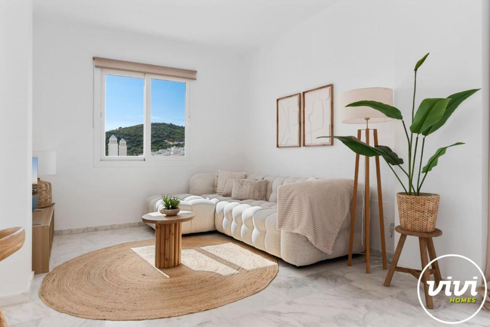
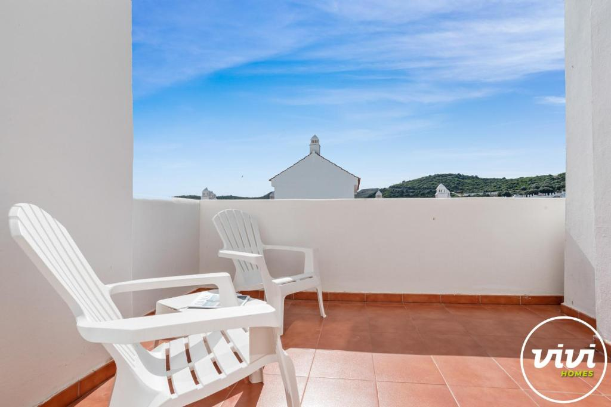
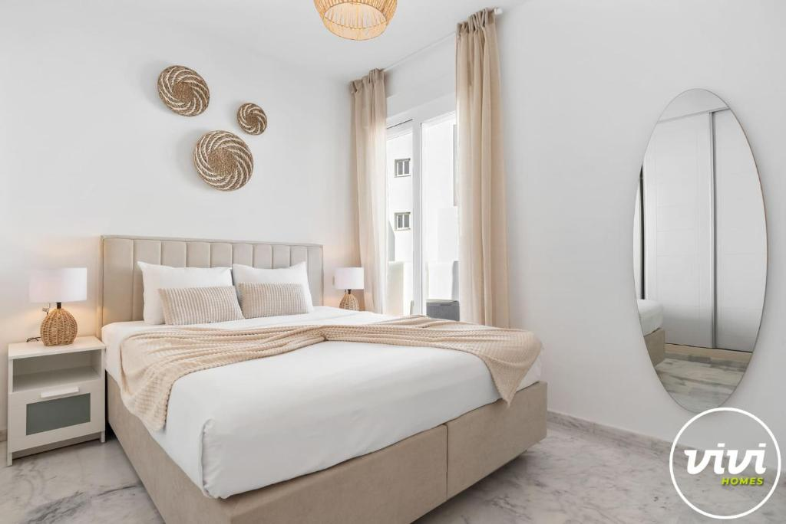
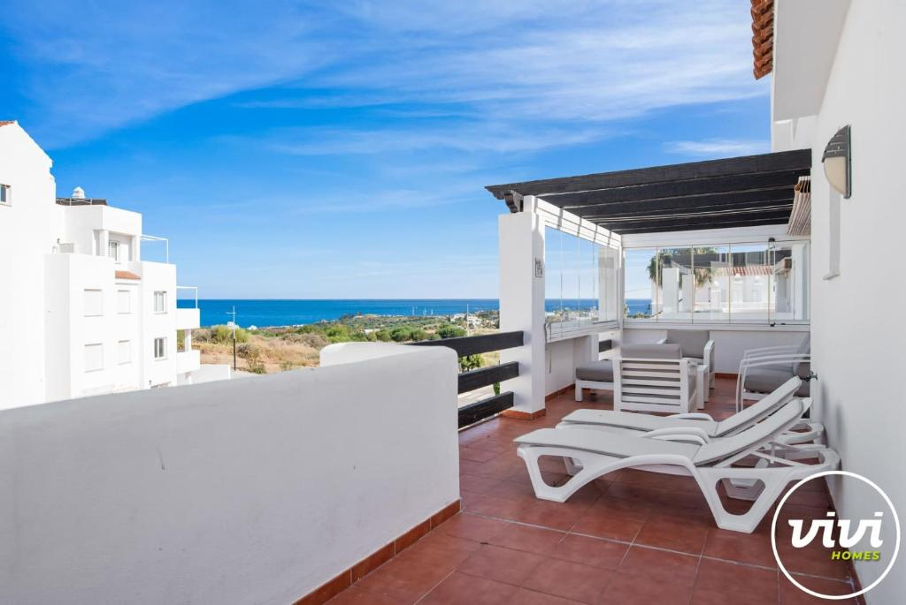

Gallery
About the House
Welcome to Casa Caselito! Enjoy stunning mountain and sea views from your private terrace and pool. This air-conditioned apartment features 2 comfortable bedrooms, a modern bathroom, a fully equipped kitchen with fridge and dishwasher, a dining area, and a balcony with a coffee machine. Towels and bed linen are provided for your stay.
- 2 Bedrooms (1 Queen size bed & 2 single beds)
- 2 Bathroom
- Pool & Terrace
- Sea & Mountain Views
- Air Conditioning & Flatscreen TV
- Fully Equipped Kitchen (fridge, dishwasher, coffee machine)
- Free Parking
- Balcony with seating
Location: 15 km from La Duquesa Golf, 6.6 km from Estepona Golf, and 21 km from El Paraíso Golf. The beach and local attractions are within easy reach.
Book NowLocation & Nearby
Nearby Attractions
-

Playa de la Rada
Sandy beach, 1.2 km -

Estepona Old Town
Historic center, 2 km -

Selwo Aventura
Wildlife park, 7 km -

Estepona Golf
Golf course, 4 km
Why Choose Casa Caselito?
Imagine waking up to breathtaking mountain and sea views, enjoying your morning coffee on a sunlit terrace, and spending your days relaxing by a pool. Casa Caselito is more than a place to stay—it's your personal retreat on the Costa del Sol.
Whether you seek tranquility, adventure, or a taste of authentic Andalusian life, our villa offers the perfect blend of comfort, style, and location. Explore charming Estepona, unwind in a beautifully furnished home, and create memories that last a lifetime.
Book your escape today and experience the magic of Casa Caselito for yourself.